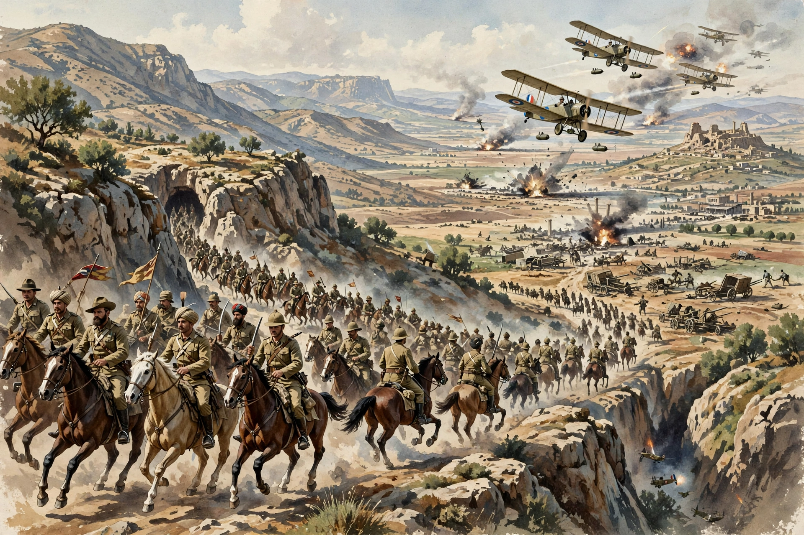

| Battle of Megiddo | ||
|---|---|---|
| Part of the Sinai and Palestine Campaign, First World War | ||
| Date | 19 September – 1 October 1918 | |
| Location | Plain of Sharon and Esdraelon, Jezreel Valley, Palestine (modern Israel) | |
| Result | Decisive Allied victory Destruction of the Ottoman armies in Palestine; capture of Damascus | |
| Belligerents | ||
| British Empire (Britain, India, Australia, New Zealand), Arab Revolt forces, French detachment | Ottoman Empire, German Asia Corps | |
| Commanders and leaders | ||
| Edmund Allenby, Edward Bulfin, Harry Chauvel, T. E. Lawrence (Arab forces), Faisal | Otto Liman von Sanders, Mustafa Kemal, Cevat Pasha | |
| Strength | c. 69,000 infantry, 12,000 cavalry, 540 guns | c. 35,000 infantry, 3,000 cavalry, 402 guns |
| Casualties and losses | 782 killed, 4,179 wounded (approx.) | Army destroyed; c. 75,000 prisoners taken in the campaign |

The Battle of Megiddo was the climactic set-piece battle of the Sinai and Palestine Campaign of the First World War, fought between British Empire and Ottoman forces from 19 September to 1 October 1918. General Edmund Allenby's Egyptian Expeditionary Force broke the Ottoman front on the coastal Plain of Sharon, poured three cavalry divisions through the gap to seize Afulah, Beisan and Nazareth, and encircled and destroyed two Ottoman armies west of the Jordan, while air power annihilated the retreating Seventh Army in the Wadi Fara defile. It is regarded as one of the most complete victories in modern warfare and gave its name — Armageddon, from Har Megiddo — a new resonance.
After capturing Jerusalem in December 1917, Allenby's 1918 offensives were delayed by the German spring offensives in France, which stripped him of British divisions (replaced by Indian troops). By September he enjoyed numerical superiority and total air supremacy. His opponent, the Ottoman Yildirim Army Group under Otto Liman von Sanders, held a line from the Mediterranean to the Jordan with the Eighth, Seventh (Mustafa Kemal) and Fourth Armies.
An elaborate deception — dummy camps, phantom troop movements in the Jordan Valley, and the open cooperation of T. E. Lawrence's Arab forces cutting the Hedjaz railway at Deraa — convinced the Ottomans the blow would fall inland. In fact Allenby massed five infantry divisions and the Desert Mounted Corps in secrecy on the coast, intending to smash the Ottoman Eighth Army on the Sharon plain, pass the cavalry through the Musmus Pass to Megiddo, and cut off the retreat of both western armies.
At 04:30 on 19 September an intense fifteen-minute bombardment opened the battle; the infantry broke through within hours. Cavalry divisions galloped through the pass and by dawn on the 20th had seized Afulah and Beisan, while an attempted raid on Liman von Sanders' headquarters at Nazareth narrowly failed to capture him. Trapped, the Ottoman Seventh Army tried to retreat down the Wadi Fara road on 21 September, where RAF and Australian aircraft bombed and strafed the column in waves until the defile was choked with wreckage — "the destruction of the Seventh Army," in the official history. East of the Jordan, the Fourth Army was mauled by Arab and Imperial forces and retreated toward Damascus, which fell on 1 October.
In twelve days Allenby advanced 350 miles and took tens of thousands of prisoners at trivial cost; Turkey signed the Armistice of Mudros on 30 October 1918. Megiddo became the model of a modern battle of encirclement — studied for its deception, air-ground cooperation and cavalry exploitation — and Allenby took his peerage title, Viscount Allenby of Megiddo, from it.
Falls, Cyril, Military Operations: Egypt and Palestine (official history); Wavell, Archibald, The Palestine Campaigns.